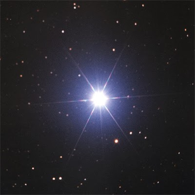
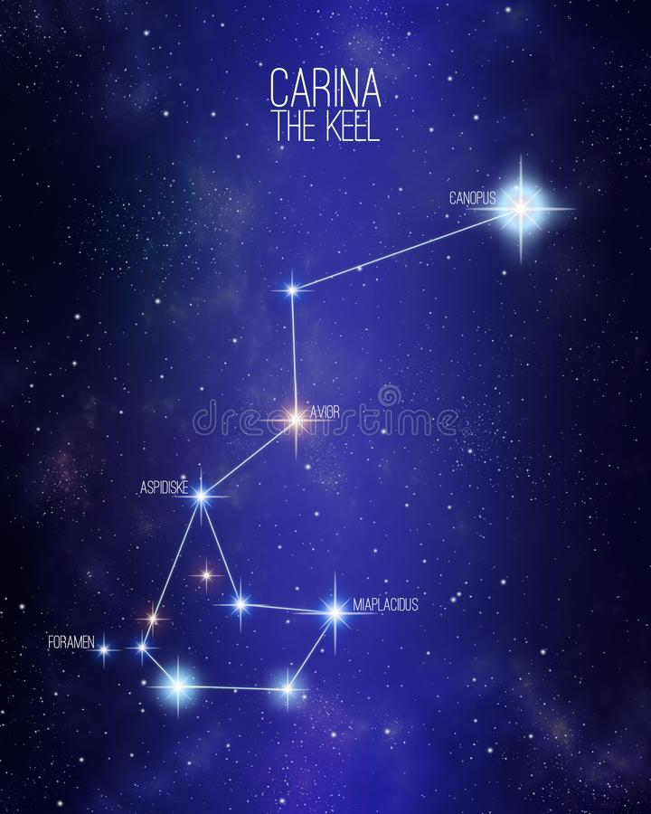

Canopus

Ela é uma supergigante branco-amarelada, 65 vezes maior e 20 mil vezes mais luminosa que o Sol. No palco celeste,
Canopus é literalmente uma superstar, e no céu de muitos planetas de outros sistemas solares, provavelmente
é a mais brilhante.
Canopus é fácil de identificar pois fica próxima de Sirius, a estrela mais brilhante do céu noturno. Encontre a constelação de Carina,
perto do Cruzeiro do Sul, e lá estará ela. Se possuir um par de binóculos,
encontrará aglomerados fascinantes nessa região.

Canopus está, segundo o satélite Hipparcos, a 310 anos-luz (96 parsecs) de nosso sistema solar
(baseado na medida de paralaxe de 10,43 ± 0,53 arcseg). Antes de Hipparcos, a distância estimada
da estrela tinha uma ampla variação que ia de 1200 anos-luz até próximo a 96 anos-luz; se os dados
fossem corretos, Canopus seria uma das estrelas mais poderosas de nossa galáxia. Como é, ela é cerca
de 20.000 vezes mais brilhante que o Sol. É muito mais luminosa , intrinsecamente, que a estrela solitária
que parece brilhar mais que ela vista da Terra — Sirius que é apenas 22 vezes mais luminosa que nosso sol, e depende
de estar muito mais próxima de nós para superar sua rival em magnitude aparente.
Na realidade, para uma grande fração de estrelas nas proximidades da posição estelar, Canopus é a "estrela mais brilhante no céu".
.
Desenvolvedoras:
MARIA LUIZA GONÇALVES PEREIRA
NICOLY RILLARY BRITO DA SILVA